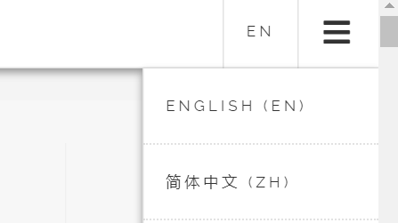
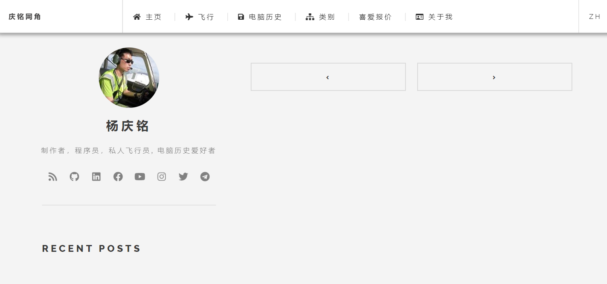

I’ve been working in a Chinese tech company for some months now. I realised I needed to improve my command of technical Chinese rather than taking the easy way out of using the English terms when communicating with my Chinese colleagues.
The only way to improve is to use it more often but technical Chinese is rarely utilised and understood outside the working environment of a Chinese tech company in Singapore. Therefore there are limited opportunities to improve in this area.
Since I write on quite a lot of technical stuff, I thought one way to improve my usage of technical Chinese is by writing bilingual blog posts. To do that, I’ll first have to adjust my blog to have multilingual support.
(Check out the Chinese version of this post here.)
My blog uses the Hugo static site generator so the first step is to head to Hugo’s web site to read up on how I should proceed.
1. Adjust site configuration
Hugo sites including mine have a config.toml that specifies key site information like URL, title, theme and other parameters.
This config.toml also includes theme-specific configuration that may differ heavily among different themes. The theme I’m using is hugo-future-imperfect-slim.
Its theme-specific configuration documentation can be found here.
Below is a reduced version of my config.toml.
DefaultContentLanguage = "en"
[Languages.zh.params.header]
navbarTitle = "庆铭网角"
...
[Languages.zh.params.intro]
header = "杨庆铭"
paragraph = "制作者，程序员，私人飞行员, 复古电脑爱好者"
...
[Languages.zh.params.intro.pic]
src = "/img/main/logo.jpg"
alt = "庆铭头像照片"
[[Languages.zh.menu.main]]
name = "主页"
identifier = "home"
...
[[Languages.zh.menu.main]]
name = "飞行"
identifier = "aviation"
url = "/categories/飞行"
...
[[Languages.zh.menu.main]]
name = "复古电脑"
identifier = "retrocomputing"
url = "/categories/复古电脑"
...
[[Languages.zh.menu.main]]
name = "类别"
identifier = "categories"
url = "/categories/"
...
[[Languages.zh.menu.main]]
name = "格言"
identifier = "quotes"
url = "/favourite-quotes/"
...
[[Languages.zh.menu.main]]
name = "关于我"
identifier = "about"
url = "/about-me/"
...
[Languages]
# Each language has its own menu.
[Languages.en]
LanguageCode = "en"
LanguageName = "English"
weight = 1
[Languages.zh]
LanguageCode = "zh-sg"
LanguageName = "简体中文"
title = "庆铭网角"
weight = 2
I have to provide the Chinese translation for every menu option.
I cannot find a good translation of the term “retrocomputing” so a friend advised me that the closest term was 复古电脑.
Upon reloading the site, my theme gives me this selection option :)
2. Writing bilingual posts
Hugo suggests 2 methods for segregating multilingual content.
a. Directory
The first method requires that the content be separated into different directories.
[languages.en]
contentDir = "content/english"
languageName = "English"
weight = 10
[languages.zh]
contentDir = "content/chinese"
languageName = "简体中文"
weight = 20
b. Filename
The second way is on the individual markdown file level.
/content/post/2020/08/adding-chinese-support-to-my-blog/index.md
/content/post/2020/08/adding-chinese-support-to-my-blog/index.en.md
/content/post/2020/08/adding-chinese-support-to-my-blog/index.zh.md
If the language code like en and zh is not specified, it will be assumed to be the default language.
This is the method I opted for as I want my English and Chinese content translation of the same post to be together in the same place for ease of maintenance. However I did not use the index.en.md naming for the English posts as that will cause the new permalinks to have the /en/ subpath breaking any existing external links to my blog posts.
3. Translate existing metadata content
For a site freshly added with multilingual support, you’ll see something like the following.
It’s empty because all the existing posts are not multilingual. So we have to add content to the Chinese version of the site.
a. Duplicating content filenames to Chinese
find . -name index.md -exec dirname {} \; | xargs -I % sh -c 'cp %/index.md %/index.zh.md;'
To have the English posts appear under the Chinese language setting, we use the above command to duplicate into zh files.
b. Find and replace English categories
find . -name index.zh.md | xargs -I % sh -c "sed -i 's/\"Singapore\"/\"新加玻\"/g' %"
After that, we have to change the Hugo Front Matter of each page categories: ["Singapore"] -> categories: ["新加玻"]. I have to repeat this for every single category I use.
In the end, I reverted the changes as I realised Hugo actually creates another set of images for each translated post. This causes the size of my site to bloat so much it busted the 1GB Github pages limit.
So I’m leaving the Unix commands above in case it can be useful to someone else.
Commenting problems
I used the Disqus and Facebook commenting systems. How they work is that you have to pass in your post-specific URL then their Javascript plugin will load the comments specific to that page. This is the current code I used.
<div class="fb-comments" data-href="{{ .Permalink }}" data-width="100%" data-numposts="5"></div>
"{{ .Permalink }}" is to let Hugo fill in the current URL of the site when calling the Facebook plugin.
The issue now with multilingual posts is that the URL for the translated version will differ as follows.
https://yeokhengmeng.com/2020/08/adding-chinese-support-to-my-blog/
https://yeokhengmeng.com/zh/2020/08/adding-chinese-support-to-my-blog/
With a different URL, the English and Chinese comments that will be loaded are segregated to the language-specific posts. Basically, the English and Chinese comments will not mix. I can’t think of a way to solve this problem as of now.
Conclusion
With the basic architecture set up for bilingual support, my upcoming blog posts will be bilingual whenever feasible.
As for how I wrote the Chinese version of this post given my relatively poorer command of Chinese, I used both Google and Baidu translation websites to assist me to translate words that I did not know how to express. Then verify that the translation actually makes sense and can carry the context and point in my personal style.
Therefore the Chinese version is not a direct automated translation. You can use Google translate on my text if you don’t believe me.
I hope you find this interesting!
Check out the Chinese version of this post here.


{kind=link}
{kind=link}